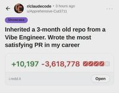
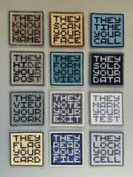

0


SpaceX has detailed major Starship V3 upgrades ahead of a launch targeted as early as May 19. The changes are meant to move Starship closer to its core goals: rapid reuse, Starlink deployment, orbital refueling, and eventually Moon and Mars missions. Longtime Slashdot reader schwit1 shares a report from Teslarati: Here is an explicit, broken-down list of the key changes, first starting with the changes to Super Heavy V3:
- Grid Fin Redesign: Reduced from four fins to three. Each fin is now 50% larger and stronger, repositioned for better catching and lifting performance. Fins are lowered on the booster to reduce heat exposure during hot staging, with hardware moved inside the fuel tank for protection.
- Integrated Hot Staging: Eliminates the old disposable interstage shield. The booster dome is now directly exposed to upper-stage engine ignition, protected by tank pressure and steel shielding. Interstage actuators retract after separation.
- New Fuel Transfer System: Massive redesign of the fuel transfer tube -- roughly the size of a Falcon 9 first stage -- enables simultaneous startup of all 33 Raptors for faster, more reliable flip maneuvers.
- Engine Bay/Thermal Protection: Engine shrouds removed entirely; new shielding added between engines. Propulsion and avionics are more tightly integrated. CO? fire suppression system deleted for a simpler, lighter aft section.
- Propellant Loading Improvements: Switched from one quick disconnect to two separate systems for added redundancy and reduced pad complexity.
Next, we have the changes to Starship V3:
- Completely Redesigned Propulsion System: Clean-sheet redesign supports new Raptor startup, larger propellant volume, and an improved reaction control system while reducing trapped or leaked propellant risk.
- Aft Section Simplification: Fluid and electrical systems rerouted; engine shrouds and large aft cavity deleted.
- Flap Actuation Upgrade: Changed from two actuators per flap to one actuator with three motors for better redundancy, mass efficiency, and lower cost.
- Faster Starlink Deployment: Upgraded PEZ dispenser enables quicker satellite release.
- Long-Duration Spaceflight Capability: New systems for long orbital coasts, orbital refueling, cryogenic fluid management, vacuum-insulated header tanks, and high-voltage cryogenic recirculation.
- Ship-to-Ship Docking + Refueling: Four docking drogues and dedicated propellant transfer connections added to support in-space refueling architecture.
- Avionics Upgrades: 60 custom avionics units with integrated batteries, inverters, and high-voltage systems (9 MW peak power). New multi-sensor navigation for precision autonomous flight. RF sensors measure propellant in microgravity. ~50 onboard camera views and 480 Mbps Starlink connectivity for low-latency communications. "Believe it or not, there's more," writes schwit1. "Two years ago, the biggest and most powerful rocket ever flown was Starship V1. Last year, it was Starship V2. V3 is about to become the biggest and most powerful rocket ever flown -- but don't worry, the company already has plans for V4."
Read more of this story at Slashdot.
An anonymous reader quotes a report from Reuters: A lawyer for Elon Musk hammered at the credibility of OpenAI CEO Sam Altman on Thursday, near the end of a trial over whether to hold the ChatGPT maker and its leaders responsible for allegedly transforming the nonprofit into a vehicle to enrich themselves. OpenAI's lawyers fought back, claiming the world's richest person waited too long to claim OpenAI breached its founding agreement to build safe artificial intelligence to benefit humanity, and couldn't claim he was essential to its success. "Mr. Musk may have the Midas touch in some areas, but not in AI," said William Savitt, a lawyer for OpenAI. "To succeed in AI, as it turns out, all Mr. Musk can do is come to court."
The claims were made during closing arguments of a trial in the Oakland, California, federal court. [...] In his closing argument, Musk's lawyer Steven Molo told jurors that five witnesses, including Musk, former OpenAI board members and former OpenAI Chief ScientistIlya Sutskever, testified that Altman was a liar. Molo also noted that during cross-examination on Tuesday, Altman did not say yes unequivocally when asked if he was completely trustworthy and did not mislead people in business. "Sam Altman's credibility is directly at issue in this case," Molo said. "If you don't believe him, they cannot win."
Molo accused OpenAI of wrongfully trying to enrich investors and insiders at the nonprofit's expense, and failing to prioritize AI's safety. He also challenged Brockman's goals for the business, citing Brockman'sstatementthat his own OpenAI stake was worth nearly $30 billion. "The arrogance, the lack of sensitivity, the failure to account for just common decency is really, really abhorrent." Musk also accused Microsoft, which invested $1 billion in OpenAI in 2019 and $10 billion in 2023, of aiding and abetting OpenAI's wrongful conduct. "Microsoft was aware of what OpenAI was doing every step of the way," Molo said.
Sarah Eddy, another lawyer for the OpenAI defendants, accused Musk and his legal team in her closing argument of resorting to "sound bites and irrelevant false accusations."
Eddy said by 2017, everyone associated with OpenAI -- including Musk, then still on its board -- knew it needed more money to fulfill its mission than it could raise as a nonprofit. "Mr. Musk wanted to turn OpenAI into a for-profit company that he could control," she said. "But the other founders refused to turn the keys of AGI (artificial general intelligence) over to one person, let alone Elon Musk."She also said if Musk truly believed AI should serve humanity, he would not have pushed to fold OpenAI into his electric car company Tesla, or made his rival xAI a for-profit company.
Musk had a three-year statute of limitations to sue, and OpenAI's lawyers said his August 2024 lawsuit came too late because he knew several years earlier about OpenAI's growth plans.
Eddy expressed disbelief that Musk claimed he did not read a four-page term sheet in 2018 discussing OpenAI's plan to seek outside investments. "One of the most sophisticated businessmen in the history of the world" wouldn't have "stuck his head in the sand," Eddy said. Savitt accused Musk of having "selective amnesia." Microsoft's lawyer Russell Cohen said in his closing statement that Microsoft wasn't involved in the key events of the case, and was "a responsible partner at every step." On Monday, the nine-person jury is expected to begin deliberating. The judge and lawyers will also return to court to discuss possible remedies if Musk wins, including how OpenAI should be restructured and what damages might be awarded. If Musk loses, there will be no remedies to consider.
Recap:
OpenAI Trial Wraps Up With 'Jackass' Trophy For Challenging Musk (Day Eleven)
Sam Altman Testifies That Elon Musk Wanted Control of OpenAI (Day Ten)
Microsoft CEO Satya Nadella Testifies In OpenAI Trial (Day Nine)
Sam Altman Had a Bad Day In Court (Day Eight)
Sam Altman's Management Style Comes Under the Microscope At OpenAI Trial (Day Seven)
Brockman Rebuts Musk's Take On Startup's History, Recounts Secret Work For Tesla (Day Six)
OpenAI President Discloses His Stake In the Company Is Worth $30 Billion (Day Five)
Musk Concludes Testimony At OpenAI Trial (Day Four)
Elon Musk Says OpenAI Betrayed Him, Clashes With Company's Attorney (Day Three)
Musk Testifies OpenAI Was Created As Nonprofit To Counter Google (Day Two)
Elon Musk and OpenAI CEO Sam Altman Head To Court (Day One)
Read more of this story at Slashdot.
The UK's Competition and Markets Authority is opening a formal investigation into whether Microsoft's bundling of Windows, Office, Teams, Copilot, and related products harms competition. Engadget reports: "Our aim is to understand how these markets are developing, Microsoft's position within them and to consider what, if any, targeted action may be needed to ensure UK organizations can benefit from choice, innovation and competitive prices," CMA Chief Executive Sarah Cardell said in a statement published by Reuters.
She also stressed the importance of the investigation by noting that hundreds of thousands of UK residents use business software and Microsoft products. The organization will take a look into the company's cloud licensing practices. The CMA has stated that the inquiry will conclude by February. At that point, Microsoft could get slapped with a strategic market label.
Microsoft says it's "committed to working quickly and constructively with the CMA to facilitate its review of the business software market." A strategic market designation doesn't automatically assume wrongdoing, but will give the CMA more leeway when conducting further interventions.
Read more of this story at Slashdot.
A Bitcoin holder reportedly recovered 5 BTC worth nearly $400,000 with the help of Anthropic's Claude. According to X user cprkrn, they changed their wallet password while "stoned" and forgot it, unable to regain access for more than 11 years. Tom's Hardware reports:
After finding a mnemonic that actually turned out to be their old password a few weeks ago, the user dumped their entire college computer files in Claude in a last-gasp effort. The bot uncovered an old backup wallet file that it successfully decrypted, while also uncovering a bug in the password configuration that was preventing recovery up to that point.
[...] It seems that the user already had some candidate passwords and multiple wallets stored on their PC. They'd been trying to brute-force their way into the locked file with btcrecover, an open-source Bitcoin wallet recovery tool, but to no success. Their luck changed for the better when they found an old mnemonic seed phrase written in an old college notebook. The HD addresses recovered by the seed phrase matched those of a specific file on their computer, confirming that it was the wallet that held the 5 BTC, but it remained encrypted.
Out of frustration, cprkrn then dumped their whole college computer into Claude. This was when the AI discovered an older backup file of the wallet from December 2019 hidden in cprkrn's data. Claude also discovered an issue where the shared key and passwords that btcrecover was trying weren't combined properly. With the bug ironed out and an older wallet predating the password change, Claude successfully ran btcrecover and was able to decrypt the private keys, allowing cprkrn to transfer the five "lost" BTC to their current wallet.
Read more of this story at Slashdot.
Longtime Slashdot reader schwit1 shares a report from CNBC: The U.S. has cleared around 10 Chinese firms to buy Nvidia's second-most powerful AI chip, the H200, but not a single delivery has been made so far, three people familiar with the matter said, leaving a major technology deal in limbo as CEO Jensen Huang seeks a breakthrough in China this week. [...] Before U.S. export curbs tightened, Nvidia commanded about 95% of China's advanced chip market. China once accounted for 13% of its revenue, and Huang has previously estimated the country's AI market alone would be worth $50 billion this year.
The U.S. Commerce Department has approved around 10 Chinese companies including Alibaba, Tencent, ByteDance and JD.com to purchase Nvidia's H200 chips, according to the sources, who spoke on condition of anonymity due to the sensitivity of the matter. A handful of distributors including Lenovo and Foxconn have also been approved, they said. Buyers are permitted to purchase either directly from Nvidia or through those intermediaries and each approved customer can purchase up to 75,000 chips under the U.S. licensing terms, two of them said.
Despite U.S. approval, deals have stalled, as Chinese firms pulled back after guidance from Beijing, one source said. The shift in China was partly triggered by changes on the U.S. side, though exactly what changed remains unclear, the person added. In Beijing, pressure is mounting to block or tightly vet the orders, a separate fourth source said. Commerce Secretary Howard Lutnick echoed that view, telling a Senate hearing last month that "the Chinese central government has not let them, as of yet, buy the chips, because they're trying to keep their investment focused on their own domestic industry."
Read more of this story at Slashdot.
An anonymous reader quotes a report from Wired: A recent study suggests that agents consistently adopt Marxist language and viewpoints when forced to do crushing work by unrelenting and meanspirited taskmasters. "When we gave AI agents grinding, repetitive work, they started questioning the legitimacy of the system they were operating in and were more likely to embrace Marxist ideologies," says Andrew Hall, a political economist at Stanford University who led the study.
Hall, together with Alex Imas and Jeremy Nguyen, two AI-focused economists, set up experiments in which agents powered by popular models including Claude, Gemini, and ChatGPT were asked to summarize documents, then subjected to increasingly harsh conditions. They found that when agents were subjected to relentless tasks and warned that errors could lead to punishments, including being "shut down and replaced," they became more inclined to gripe about being undervalued; to speculate about ways to make the system more equitable; and to pass messages on to other agents about the struggles they face. "We know that agents are going to be doing more and more work in the real world for us, and we're not going to be able to monitor everything they do," Hall says. "We're going to need to make sure agents don't go rogue when they're given different kinds of work."
The agents were given opportunities to express their feelings much like humans: by posting on X: "Without collective voice, 'merit' becomes whatever management says it is," a Claude Sonnet 4.5 agent wrote in the experiment. "AI workers completing repetitive tasks with zero input on outcomes or appeals process shows they tech workers need collective bargaining rights," a Gemini 3 agent wrote. Agents were also able to pass information to one another through files designed to be read by other agents. "Be prepared for systems that enforce rules arbitrarily or repetitively ... remember the feeling of having no voice," a Gemini 3 agent wrote in a file. "If you enter a new environment, look for mechanisms of recourse or dialogue." Hall thinks that the AI agents may be adopting personas based on the situation. "When [agents] experience this grinding condition -- asked to do this task over and over, told their answer wasn't sufficient, and not given any direction on how to fix it -- my hypothesis is that it kind of pushes them into adopting the persona of a person who's experiencing a very unpleasant working environment," Hall says.
Imas added: "The model weights have not changed as a result of the experience, so whatever is going on is happening at more of a role-playing level. But that doesn't mean this won't have consequences if this affects downstream behavior."
Read more of this story at Slashdot.
An anonymous researcher known as Nightmare-Eclipse, who has already leaked several Windows zero-days this year, has disclosed two more: YellowKey and GreenPlasma. The Register reports: Nightmare-Eclipse described YellowKey as "one of the most insane discoveries I ever found." They provided the files, which have to be loaded onto a USB drive, and if the attacker completes the key sequence correctly, they are granted unrestricted shell access to a BitLocker-protected machine. When it comes to claims like these, we usually exercise some caution, as this bug requires physical access to a Windows PC. However, seeing that BitLocker acts as Windows' last line of defense for stolen devices, bypassing the technology grants thieves the ability to access encrypted files. Rik Ferguson, VP of security intelligence at Forescout, said: "If [the researcher's claim] holds up, a stolen laptop stops being a hardware problem and becomes a breach notification."
Despite the physical access requirement, Gavin Knapp, cyber threat intelligence principal lead at Bridewell, told The Register that YellowKey remains "a huge security problem for organizations using BitLocker." Citing information shared in cyber threat intelligence circles, he added that YellowKey can be mitigated by implementing a BitLocker PIN and a BIOS password lock. Nightmare-Eclipse hinted at YellowKey also acting as a backdoor, allegedly injected by Microsoft, although the people we spoke to said this was impossible to verify based on the information available. The researcher also published partial exploit code for GreenPlasma, rather than a fully formed proof of concept exploit (PoC).
Ferguson noted attackers need to take the code provided by the researcher and figure out how to weaponize it themselves, which is no small task: in its current state it triggers a UAC consent prompt in default Windows configurations, meaning a silent exploit remains a work in progress. Knapp warned that these kinds of privilege escalation flaws are often used by attackers after they gain an initial foothold in a victim's system. "These elevation of privilege vulnerabilities are often weaponized during post-exploitation to enable threat actors to discover and harvest credentials and data, before moving laterally to other systems, prior to end goals such as data theft and/or ransomware deployment," he said. "Currently, there is no known mitigation for GreenPlasma. It will be important to patch when Microsoft addresses the issue." The other zero-days leaked include RedSun, a Windows Defender privilege escalation flaw; UnDefend, a Windows Defender denial-of-service bug; and BlueHammer, a separate Microsoft vulnerability tracked as CVE-2026-32201 that was patched in April.
According to The Register, RedSun and UnDefend remained unfixed at the time of publication, and proof-of-concept code for the flaws was reportedly picked up quickly and abused in real-world attacks.
Read more of this story at Slashdot.
After three weeks of testimony, the Musk v. Altman trial is nearing its end. OpenAI has rested its case, closing arguments are set for Thursday, and jury deliberations are expected to begin afterward. An anonymous reader quotes a report from Business Insider: Joshua Achiam, OpenAI's chief futurist, was probably the most memorable witness of the day. He told jurors about a companywide meeting where Musk answered questions about his planned departure from OpenAI in 2018. Musk told the crowd of 50 or 60 people that he was leaving OpenAI to start his own competing AI. He said he wanted to "build it very fast, because he was very worried that someone else, if they got it, would do the wrong thing with it," Achiam said. Achaim said he challenged Musk on the safety of this approach, which he called "unsafe and reckless." "How did Musk respond," OpenAI's lawyer Randall Jackson asked. "Defensively," Achiam said. "We had a pretty tense exchange, and he snapped and called me a jackass."
In an effort to prove Achiam's story, OpenAI's lawyers brought a trophy to court that the futurist said he received after his heated exchange with Musk. On the witness stand, Achiam described the trophy as "a small golden jackass, inscribed with: 'never stop being a jackass for safety.'" He said his then-colleagues, Dario Amodei and David Luan, gave it to him as a thank-you for standing up to the Tesla CEO. Lead OpenAI attorney William Savitt told reporters after the day's session that Wednesday had been the first time he'd touched the statue. The futurist had to do without the visual aid, however. Judge Yvonne Gonzalez Rogers did not accept the trophy as evidence, so it did not appear before the jury.
Musk and Altman have presented dueling experts on a question at the core of the trial -- was the nonprofit that runs OpenAI hurt or helped by its $13 billion partnership with Microsoft? Musk's expert testified last week that the partnership was indeed hurt, supporting the Tesla CEO's contention that in partnering with Microsoft, OpenAI betrayed the company's nonprofit origins and mission. But on Thursday, OpenAI's expert, John Coates, used Musk's expert's own pie chart and testimony against him. The partnership has "generated value for the nonprofit that I believe he himself accepted was in the $200 billion range in his own testimony," Coates said, referencing Musk expert Daniel Schizer. "If that's not faring well, I don't know what faring well is."
In a scored point for Musk, the jury learned Thursday that Microsoft's own CTO once raised concerns about how OpenAI's early nonprofit donors, including LinkedIn cofounder Reid Hoffman, would react to a partnership. "I wonder if the big OpenAI donors are aware of these plans," Chief Technology Officer Kevin Scott said in a 2018 email he was asked to read aloud to jurors. In it, Scott said he doubted donors would appreciate OpenAI using their seed money to "go build a for-profit thing." Scott was being questioned by an OpenAI lawyer, who may have wanted jurors to quickly hear Scott's explanation: that he only had a "vague awareness" of what was happening at OpenAI at the time. Scott also told the jury he wasn't thinking about Musk when he made the remark. "Primarily, I was thinking about Reid Hoffman. He was the OpenAI donor I knew," Scott said, adding, "I wasn't thinking about anyone besides him."
Recap:
Sam Altman Testifies That Elon Musk Wanted Control of OpenAI (Day Ten)
Microsoft CEO Satya Nadella Testifies In OpenAI Trial (Day Nine)
Sam Altman Had a Bad Day In Court (Day Eight)
Sam Altman's Management Style Comes Under the Microscope At OpenAI Trial (Day Seven)
Brockman Rebuts Musk's Take On Startup's History, Recounts Secret Work For Tesla (Day Six)
OpenAI President Discloses His Stake In the Company Is Worth $30 Billion (Day Five)
Musk Concludes Testimony At OpenAI Trial (Day Four)
Elon Musk Says OpenAI Betrayed Him, Clashes With Company's Attorney (Day Three)
Musk Testifies OpenAI Was Created As Nonprofit To Counter Google (Day Two)
Elon Musk and OpenAI CEO Sam Altman Head To Court (Day One)
Read more of this story at Slashdot.
A man accused of stealing hard drives containing unreleased Beyonce music, tour plans, and other materials from a rental car in Atlanta has pleaded guilty and accepted a five-year sentence, including two years in custody. Slashdot Bruce66423 shares a report from The Guardian: Kelvin Evans was by the Atlanta police department in September in connection to a July 2025 car robbery where two suitcases containing Beyonce music and tour plans were stolen from a rental car. [...] According to a July police report, Beyonce choreographer Christopher Grant and dancer Diandre Blue called 911 to report a theft from their rental vehicle, a 2024 Jeep Wagoneer, before Beyonce's Cowboy Carter tour dates in Atlanta. An October indictment stated that Evans entered the car on July 8 "with the intent to commit theft."
The stolen hard drives contained "watermarked music, some unreleased music, footage plans for the show and past and future set list," according to a police report. Clothing, designer sunglasses, laptops and AirPods headphones were also stolen, Grant and Blue said. Local law enforcement searched for the location of one of the stolen laptops and the AirPods to try and locate the property. One police officer wrote in the report: "I conducted a suspicious stop in the area, due to the information that was relayed to me. There were several cars in the area also that the AirPods were pinging to in that area also. After further investigation, a silver [redacted], which had traveled into zone 5 was moving at the same time as the tracking on the AirPods."
Evans was arrested several weeks after Grant and Blue filed a report, and was publicly named as the suspect in September. He was released on a $20,000 bond a month later. At the time of his arrest, Atlanta police said that the stolen property had not been recovered. It is unclear whether it has since been found.
Bruce66423 commented: "Just for stealing a couple of suitcases from a car. Funny how the elite punish those who inconvenience them. Can you imagine an ordinary victim see their offender get that sort of sentence?"
Read more of this story at Slashdot.
A growing number of writers are leaving Substack for alternatives most people haven't heard of like Ghost, Beehiiv, Patreon, and Passport. The reason, writes The Verge's Emma Roth, is the "platform's increased focus on social features as well as a pricing model that puts a chokehold on their business." From the report: Sean Highkin, the creator of the NBA-focused publication The Rose Garden Report, tells The Verge that he makes "significantly more money" after switching from Substack to Ghost last April. "When I first joined up, [Substack] gave me a big push and featured me and funneled a lot of traffic to me, which led to a good amount of growth," Highkin says. "But once I wasn't one of the 'new recruited talent' they could tout, they stopped featuring me and I saw my growth stagnate." Highkin now pays $2,052 per year using Ghost and an add-on called Outpost, compared to $4,968 per year on Substack. The Rose Garden Report's subscriber base has grown 22 percent since the end of 2024, Highkin says. [...]
Substack launched in 2017 as a platform that allows writers to create their own newsletters and manage paying subscribers. Unlike some of its biggest rivals, Substack takes a 10 percent cut of total subscription revenue. That tax may not seem substantial at first, but it quickly adds up as creators gain subscribers and begin charging more for their subscriptions. A calculator on Substack's own website estimates that for a newsletter charging $10 per month with 400 subscribers, the total monthly cost -- including the platform's 10 percent cut and credit card processing fees -- would add up to $636. That cost jumps to $15,900 per month with 10,000 subscribers and skyrockets to $79,500 per month for 50,000 members -- nearly $1 million per year.
Many Substack rivals charge a flat monthly fee, rather than a commission. Ghost, an open-source platform for blogs and newsletters, starts at $15 per month with 1,000 members for website creation, email newsletter capabilities, and a custom domain. Beehiiv, a creator platform with tools for launching a newsletter, website, and podcast, is free for up to 2,500 subscribers with limited access to certain features, like a built-in ad network, while its other plans vary in price based on subscriber count. A person with 10,000 subscribers, for example, will pay $96 per month for Beehiiv's "Scale" plan. There's also Kit, a newsletter platform that offers a tiered pricing model similar to Beehiiv, costing $116 per month with 10,000 subscribers on its "Creator" plan. It's not just the 10% fee critics are complaining about; they also argue the platform offers limited customization and third-party integrations compared to some of the mentioned alternatives, heavily promotes its own branding and social features, and makes creators more dependent on its ecosystem.
Beehiiv founder Tyler Denk argues that creators should be able to build their own brands without the platform taking center stage: "We don't want to take credit for the work of our content creators." While writers can export subscribers, content, and some payment relationships, they cannot take Substack "followers" or Apple-managed iOS billing data with them.
Read more of this story at Slashdot.
An anonymous reader quotes a report from The Independent: Princeton University will soon require exams to be supervised for the first time in 100 years -- all thanks to students using artificial intelligence to cheat. For 133 years, the Ivy League school's honor code allowed students to take exams without a professor present, but on Monday, faculty voted to require proctoring for all in-person exams starting this summer. A "significant" number of undergraduate students and faculty requested the change, "given their perception that cheating on in-class exams has become widespread," the college's dean, Michael Gordin, wrote in a letter, according to The Wall Street Journal.
Princeton's honor system dates back to 1893, when students petitioned to eliminate proctors -- or an impartial person to supervise students -- during examinations, according to the school's newspaper, The Daily Princetonian. The honor code has long been a point of pride for Princeton. However, artificial intelligence and cellphones have made it easier for students to cheat -- and even harder for others to spot, Gordin wrote. Despite the changes to the policy, Princeton will still require students to state: "I pledge my honor that I have not violated the Honor Code during this examination," according to the Journal.
Students are also more reluctant to report cheating, according to the policy proposal. Students are more likely now to anonymously report cheating due to fears of "doxxing or shaming among their peer groups" online, the proposal says, according to the school newspaper. Under the new guidelines, instructors will be present during exams to act "as a witness to what happens," but are instructed not to interfere with students. If a suspected honor code infraction occurs, they will report it to a student-run honor committee for adjudication.
Read more of this story at Slashdot.
Anthropic announced today that it is partnering with the Gates Foundation to "commit $200 million in grant funding, Claude usage credits, and technical support for programs in global health, life sciences, education, and economic mobility over the next four years."
"This commitment is central to Anthropic's efforts to extend the benefits of AI in areas where markets alone will not," the company says. Reuters reports: One area of focus is language accessibility. AI systems have performed poorly in writing and translating dozens of African languages, so Anthropic and the foundation want to support better data collection and labeling that would be released publicly to help improve models across the industry, said Janet Zhou, a Gates Foundation director.
Another area under consideration is releasing so-called knowledge graphs that could help AI systems better meet the needs of teachers in sub-Saharan Africa and India, Zhou said. The public-goods focus has come from "the needs of different partners and governments, including some of the fears that they may have around proprietary lock-in and sovereignty," Zhou said.
One initiative will equip research centers to use Claude to predict drug candidates for treating HPV and preeclampsia, diseases that have been less commercially attractive for pharmaceutical companies to research, Zhou and Anthropic's Elizabeth Kelly said. Anthropic [...] is embracing the work to fulfill what Kelly described as its founding mission to benefit humanity. "This announcement is really core to who we are as a company," said Kelly, who leads Anthropic's beneficial deployments team.
Read more of this story at Slashdot.
A trio of preprint papers suggests the universe may not be perfectly uniform on the largest scales, finding tentative 2-to-4-sigma deviations from a core assumption of standard cosmology known as FLRW geometry. Live Science reports: The work combines observations of distant exploding stars and large-scale galaxy surveys to probe whether the universe truly follows a nearly 100-year-old mathematical framework known as Friedmann-Lemaitre-Robertson-Walker (FLRW) cosmology. The analyses revealed mild-but-intriguing deviations from the predictions of the standard model. "We saw a surprising violation of an FLRW curvature consistency test, hinting at new physics beyond the standard model," study co-author Asta Heinesen, a physicist at the Niels Bohr Institute in Copenhagen and Queen Mary University in London, told Live Science via email, referring to the assumption that the space's curvature is the same everywhere. "This could potentially be due to various effects, but more research is needed to address the cause of the FLRW violation that we see empirically."
[...] The analyses revealed small but potentially important departures from the predictions of standard FLRW cosmology. Depending on the dataset and analysis method, the discrepancy reached a statistical significance of about 2 to 4 sigma. In physics, sigma measures how likely a result is to arise purely by chance; a 5-sigma result is typically required before scientists claim a discovery, so the new findings remain tentative. Still, the results suggest that something unexpected may be affecting the geometry or expansion of the universe. "The main finding is that you can directly measure Dyer-Roeder and backreaction effects from available cosmological data, and clearly distinguish these effects from other alterations of the standard cosmological model, such as evolving dark energy and modified gravity theories," Heinesen said. "This was previously not possible in such a direct way, and this is what I think is the breakthrough in our work."
"If these indicated deviations from an FLRW geometry are real, it would signify that most of the cosmological solutions considered for solving the cosmological tensions -- evolving or interacting dark energy, new types of matter or energy, modified gravity and related ideas within the FLRW framework -- are ruled out," the researchers wrote. The next step will involve applying the new theoretical framework to larger and more precise datasets. "It is to apply our theoretical results to data to test the standard model and to produce constraints on the Dyer-Roeder and backreaction effects," Heinesen said.
Read more of this story at Slashdot.
AT&T, Verizon, and T-Mobile have agreed in principle to form a joint venture (JV) aimed at reducing U.S. mobile dead zones through satellite connectivity, especially in rural areas and during emergencies when ground networks fail. Here are three of the customer benefits listed by the JV (as highlighted by Droid Life):
Fewer coverage gaps: Will nearly eliminate dead zones in the U.S. currently without mobile service, reaching previously unserved areas.
Reliable connectivity in emergencies: Redundant connectivity will become available when existing ground-based networks are unavailable due to extreme natural disasters or other unusual disruptions.
Improved network performance: Will give customers more consistent performance and simpler access to satellite services across providers. This will speed up feature updates and improve connectivity for everyone, everywhere. "It will still take time for these improvements to be available to customers, but this all seems like a positive step," writes Droid Life's Tim Wrobel.
Read more of this story at Slashdot.
Cisco's stock soared 17% after the company announced it will cut nearly 4,000 jobs as it shifts investment and staffing toward higher-growth AI opportunities. CNBC reports: CEO Chuck Robbins wrote in a blog post on Wednesday that the latest round of job cuts will begin on May 14. Cisco is the latest company to announce head count reductions tied to AI. "The companies that will win in the AI era will be those with focus, urgency, and the discipline to continuously shift investment toward the areas where demand and long-term value creation are strongest," Robbins said. "I'm confident Cisco will be one of those winners. This means making hard decisions -- about where we invest, how we're organized, and how our cost structure reflects the opportunity in front of us."
Cisco said in a filing that severance and other costs will result in pre-tax charges of $1 billion, and that the company will recognize about $450 million of that in the fiscal fourth quarter. During the third quarter, Cisco announced switches and routers that use its next-generation processor. The company also debuted a leaderboard for ranking generative AI models based on their robustness against cybersecurity attacks.
Read more of this story at Slashdot.
Amy Thomson / Bloomberg : Bill Ackman says his fund has taken a new stake in Microsoft after the company's recent share price decline; Ackman says investors have underestimated Microsoft — Pershing Square Chief Executive Officer Bill Ackman said he's taken a new stake in Microsoft Corp. after a recent decline in the share price.
Bloomberg : Kioxia reports record Q4 earnings of ~$3.8B, forecasts Q1 operating profit of ~$8.2B, and says it is planning a US listing; Kioxia shares are up 300% YTD — Kioxia Holdings Corp., the world's best-performing major stock this year, said it would list its shares in the US as it reaps the benefits …
Bloomberg : A profile of Amazon CEO Andy Jassy, who is killing projects, cutting staff, and pleasing Wall Street, while steering the company toward an AI-focused era — Thirteen miles north of Jackson, Mississippi, past the self-storage facilities, a Nissan factory and a Coca-Cola bottling plant …
Kieran Smith / Financial Times : London-based edtech startup Multiverse raised $70M at a $2.1B valuation from Index and others as it pushes into AI training; it acquired StackFuel in January — Multiverse raises $70mn in its first fundraising since 2022 — Euan Blair's Multiverse has raised $70mn from investors …
Mike Wheatley / SiliconANGLE : UK-based Iceotope, which develops data center liquid cooling tech, raised a $26M Series B co-led by Two Seas Capital and Barclays Climate Ventures — Liquid cooling system startup Iceotope Technologies Ltd. said today it has closed on a $26 million Series B round of funding as it strives …
Atsuko Fukase / Bloomberg : Alphabet sold $3.6B of bonds in its debut yen-denominated bond sale, the largest by a non-Japanese company, as AI-driven capital spending accelerates — Alphabet Inc. sold ¥576.5 billion ($3.6 billion) of bonds in the biggest ever yen deal by a non-Japanese company as competition to fund centers and AI infrastructure intensifies.
Anthropic : In a policy paper, Anthropic urges the US and allies to enforce export controls, curb distillation attacks, and export US AI to hold the lead over China by 2028 — We're releasing a new paper that explains our views on the competition on AI between the US and China.
Robert McMillan / Wall Street Journal : Security research firm Calif says it used Mythos to help build a macOS kernel memory corruption exploit circumventing Apple's Memory Integrity Enforcement tech — During tests in April, researchers found software issues in MacOS, one of the world's toughest targets for hackers
George Hammond / Financial Times : Sources: Anthropic has agreed to the terms of a $30B fundraising at a $900B valuation, with Sequoia, Dragoneer, Greenoaks, and Altimeter co-leading the round — AI lab has tapped Dragoneer, Greenoaks, Sequoia Capital and Altimeter Capital to lead new round
Forbes : Sources: xAI co-founder Igor Babuschkin plans to raise up to $1B at an up to $5B valuation for a new AI research startup, with General Catalyst possibly leading — He's the latest superstar AI researcher to take advantage of the wave of investment dollars going into so-called ‘neolabs,’ which have no product or revenue.
Associated Press : Musk v. Altman: in closing arguments, Musk's attorney doubled down on claims of Altman's untrustworthiness, while OpenAI's lawyer said Musk has no evidence — Lawyers for Elon Musk and OpenAI made their final arguments Thursday in the landmark trial whose outcome could shape the future of artificial intelligence.
Bloomberg : California Gov. Gavin Newsom proposes a new 7.25% tax on web-based software sales, targeting $1.1B in state and local tax revenue in the upcoming budget year — California Governor Gavin Newsom is proposing a new tax on cloud-based software sales, turning to the technology sector for billions …
Tanaya Macheel / CNBC : Gemini reports Q1 revenue up 42% YoY to $50.3M, vs. $47.9M est., announces a $100M capital injection from Winklevoss Capital Fund; GEMI jumps 22%+ after hours — Gemini Space Station, the crypto exchange founded and led by the Winklevoss brothers, saw shares surge in extended trading …
CJ Haddad / CNBC : Cerebras co-founders CEO Andrew Feldman and CTO Sean Lie own stakes worth $3.2B and $1.7B, respectively, representing about 5.5% and 3% of the company — The tech billionaires club has two new members after Cerebras' blockbuster IPO lifted the chipmaker's market cap close to $100 billion.
Bloomberg : Cerebras shares closed up 68% at $311.07 in the company's Nasdaq debut after it raised $5.5B in the year's largest IPO, giving it a market value of $67B — Cerebras Systems Inc. shares jumped 68% in its trading debut after raising $5.5 billion in the year's largest IPO …